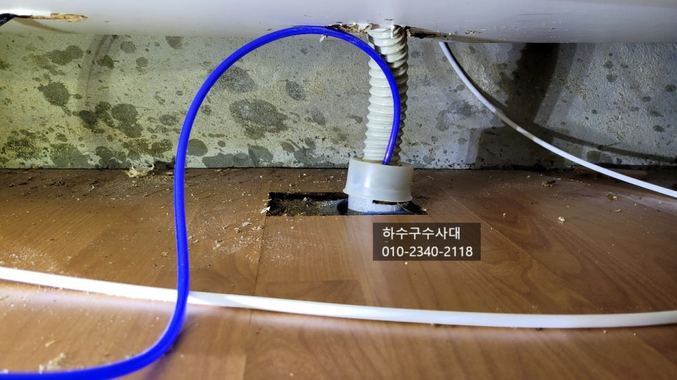
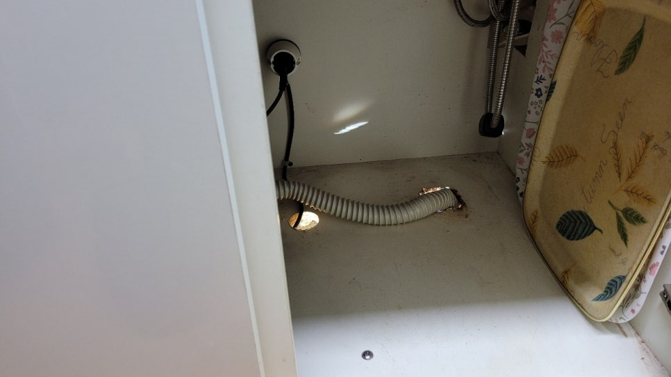
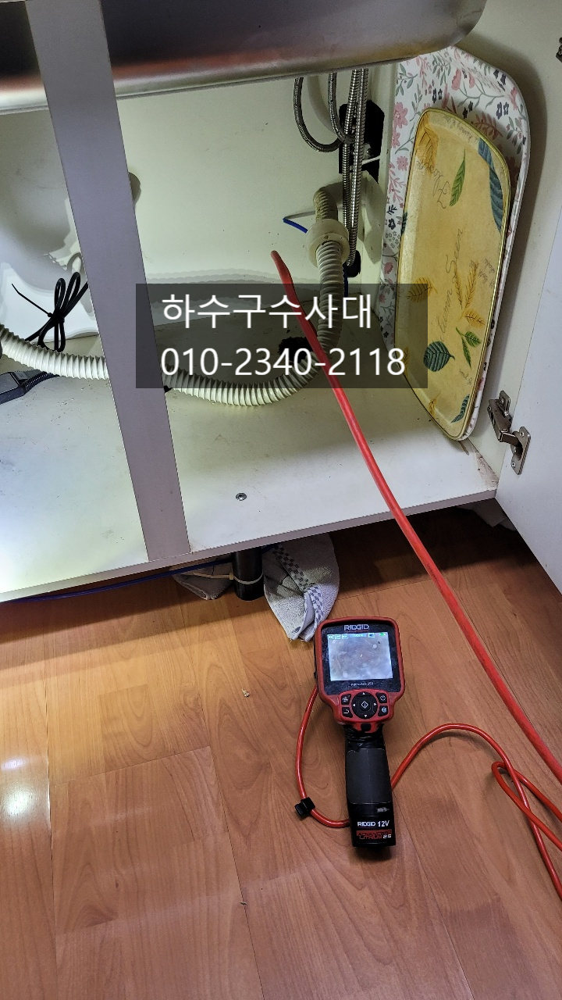
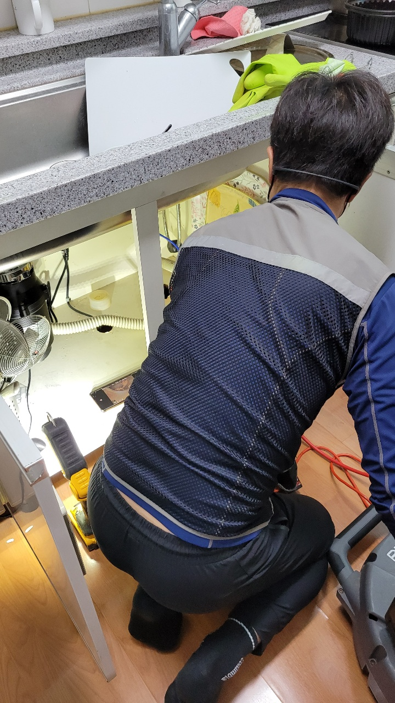
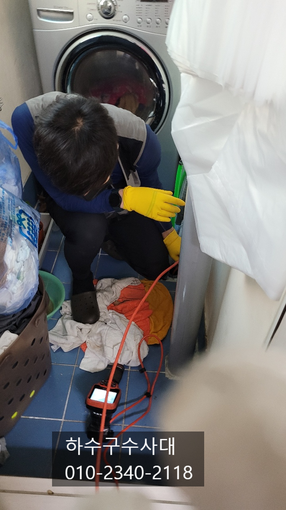
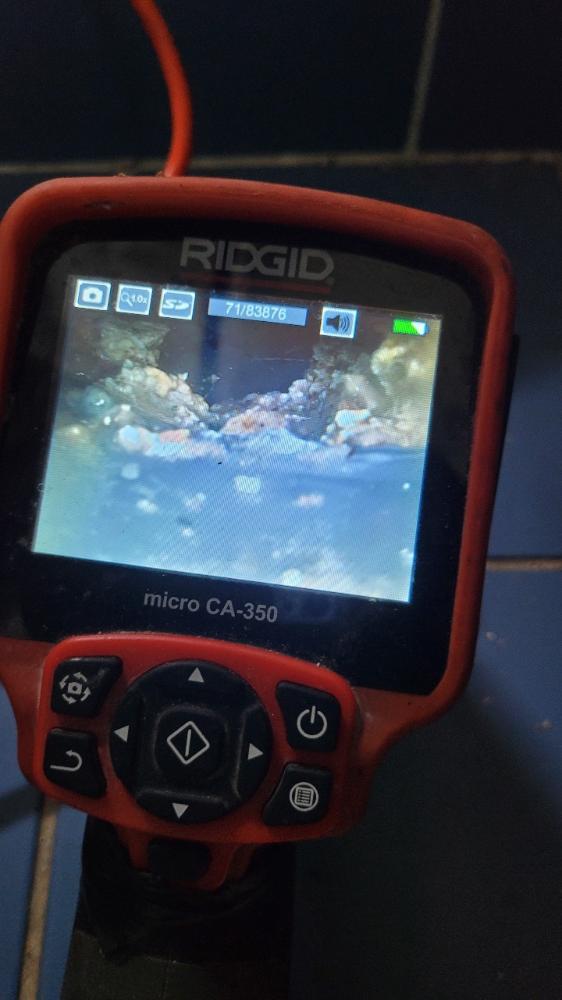
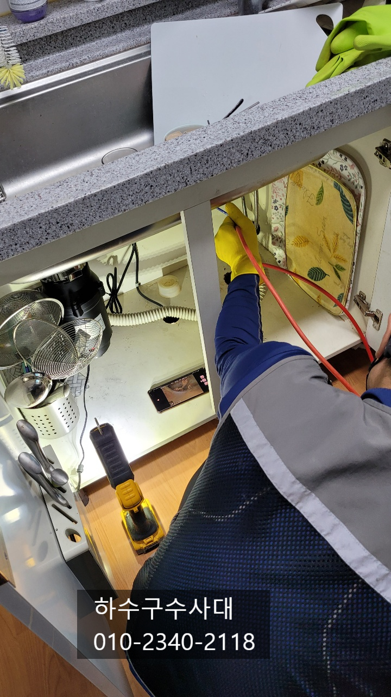

🏠 영통구싱크대막힘 영통동 망포동 신동 싱크대역류
용인 망포동 싱크대막힘 전문 시공 후기

📋 작업 개요
- 위치: 용인 망포동, 망포동, 용인
- 서비스 유형: 싱크대막힘, 하수구막힘, 배관막힘, 역류해결, 뚫는업체
- 작업 일시: 2021. 11. 21. 19:52
- 업체명: 하수구수사대 (010-5615-2118)
🔍 문제 상황
영통구싱크대막힘 영통동 망포동 신동 싱크대역류
안녕하세요
"하수구수사대" 인사드립니다.
오늘 방문한 현장은 싱크대물을 틀어놓으면
물이 역류하는 증상으로 고객님께서 직접
뚫으려고 했지만 깊은곳에서 막히
해결이 어려우셨답니다.
대부분 싱크대막힘의 주요 원인은 기름기 때문인데요
설거지를 하면서 배관을 통과하는 기름성분이
완전히 나가지 못하고 배관에 조금씩 붙게되면
덩어리가 되고 막힘 증상으로 이어지게 됩니다.
이를 예방하기 위해선 휴지로 기름을 닦아내고
물을 충분히 흘려보내는게 좋습다.
한달에 한번쯤은 펑크린을 부어서 배관에

🔎 원인 분석
💡 전문가 진단: 하수구수사대010-2340-2118
붙어있는 기름을 제거해주는 관리를 해주는것이 좋아요.
내시경카메라를 통해 막힌 지점을 파악해 보기로 하였는데요
싱크대입구쪽 보다는 깊은곳에 기름덩어리가 막혀 있는것으로
확인이 되었습니다. 배관이 세탁실과 합류되는데
세탁실과 싱크대배관 사이가 막힌것으로 확인 되었습니다.
세탁실에서도 내시경카메라를 통해 막힌 지점을 보니
기름덩어리로 막혀 있어 물이 아주 조금씩 나오는것을
확인하였습니다.
배관안에 기름기를 모두 제거해주기로 하였는데요
스프링장비로는 뚫기만 하는 용도로 기름덩어리가 남게되면
또 막힐수도 있어 플렉스샤프트를 사용하는게 효과적입니다.
플렉스샤프트는 앞쪽에 체인이 회전을하면서 기름덩어리를
제거하는데 매우 적합한 장비입니다.
내시경카메라를 보면서 기름기를 제거해 나가는데요

🔧 작업 과정
배관 일부구간에 물이 고여있는구간이 있었습니다.
그러다보니 기름기가 완전히 배출되지 못하고
배관에 점차 붙게 되었습니다.
기름덩어리가 얼마나 딱딱하게 굳었는지
쉽게 뚫리지 않아 일부장비를 교체해가면 작업을
진행하였습니다.
하수구수사대
010-2340-2118
체인이 힘차게 돌면서 기름을 갈아내지만
배관에는 전혀 지장을 주지 않게 설계되어 있답니다.
배관크기에 맞는 반경으로 회전을 하기 때문이에요^^
싱크대막힘 증상이 흔하지는 않지만
가끔 물이 잘 안내려가는 증상이 있다면
자가 테스트를 진행해 보시는것도 좋습니다.
싱크대에 물을 받아놓고 내려보는건데요
배관이 막혀있지 않다면 시원하게 나가겠지만
기름덩어리가 있다면 배관쪽에서 물이 조금씩
역류하는 증상을 보이게 됩니다.
조금씩 사용하는건 괜찮지만 많이 사용할때 역류하는 것이죠.
작업을 마치면 내시경카메라를 통해 확인하는 작업또한
매우 중요합니다. 기름덩어리가 배관안에 남아있거나
먼쪽에서 쌓이는 경우가 생기면 또한 막힘증상이
나타날수 있어요.


✅ 작업 완료
마지막으로 물을 많이 받아서 내려보는 테스트를
해봅니다.
"하수구수사대"는 수도권 전지역에서
활동하고 있으니 싱크대막힘 또는
하수구막힘으로 고민중이시라면 언제든지
연락주세요^^




⚠️ 주방 싱크대 배관 막힘 예방 수칙
- ✅ 기름기가 묻은 식기나 프라이팬은 설거지 전 키친타올로 반드시 기름때를 닦아내세요.
- ✅ 주기적으로 싱크대 개수대에 뜨거운 물을 가득 받아 한 번에 내려 배관 내부 기름을 씻어내세요.
- ✅ 배수구 거름망을 미세한 필터로 사용하시고 음식물 찌꺼기가 틈으로 새어 들지 않게 관리하세요.
- ✅ 베이킹소다와 식초를 뜨거운 물과 함께 일주일에 한 번씩 부어주면 배관 살균과 막힘 예방에 좋습니다.
💡 핵심 정리
- 확실한 장비 작업(내시경 점검 및 샤프트 스케일링)으로 원인을 뿌리 뽑습니다.
- 작업 후 1년 이내에 동일한 부위 재발 시 100% 무상 A/S 서비스를 보장합니다.
- 서울 · 경기 · 인천 전 지역에 24시간 언제든 긴급 출동할 수 있도록 항시 대기 중입니다.
❓ 자주 묻는 질문 (FAQ)
🚨 용인 망포동 싱크대막힘 문제로 고민이신가요?
정확한 원인 진단과 확실한 시공으로 재발 없는 해결을 약속드립니다.
24시간 긴급 출동 | 서울 · 경기 · 인천 전지역 | 1년 내 재발 시 무상 A/S